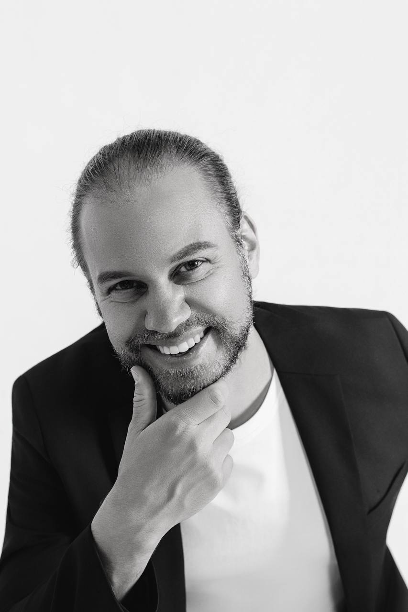
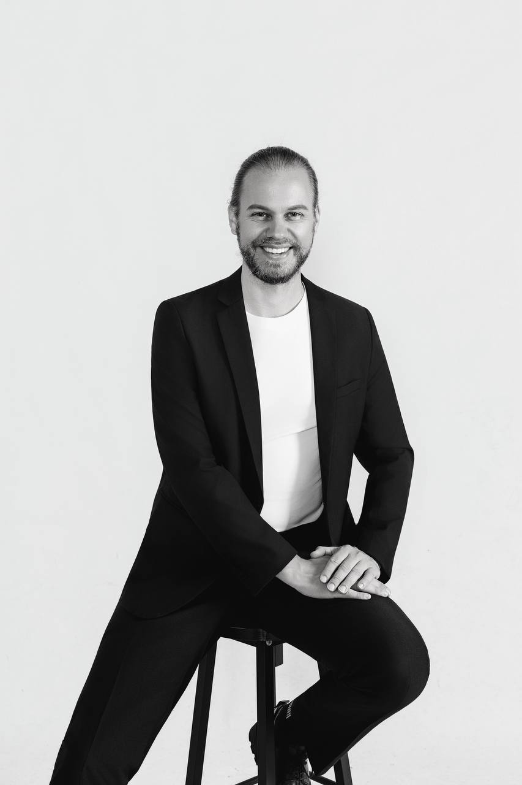

About me
The things people usually sweep under the rug are welcome here too.
People often come to me because something is stuck. The same argument ends the same way for the tenth time. Trust has cracked. They no longer know whether the relationship still has a future. Or there are feelings that have had nowhere to go for a long time.
Jealousy, shame, anger, sex, affairs, withdrawal, thoughts of separation – including the things that are hard to say out loud. We can start there.

How I work
I listen. And I tell you what I see.
I listen to what is being said and to the sequence underneath it. Where does a conversation tip? Who pulls away? Who starts pushing harder? Who carries too much? What stops being said altogether?
When I see a pattern, I name it. Clearly, without putting you on display. Difficult things are allowed to be difficult. We look at them properly.
I want you to be able to speak honestly. That includes mixed feelings, things you are ashamed of and moments when you genuinely do not know what you want.
Who you'll be talking to
Theophil Kroller
I am a psychosocial counsellor and founder of Beziehungsdynamiken. My focus is relationships – in individual sessions, with couples, and with people in open, polyamorous or still undefined relationship constellations.
My thinking is shaped by research and academic work. In the room, my first concern is much simpler: understanding what is actually happening for you or between you, and what can change.
What matters to me
I like clear conversations. I ask again when something does not quite add up. I can stay with anger, hurt, uncertainty or shame. And I value humour when there is room for it again.
You can come on your own even when the issue is a relationship. You can come as a couple. If your relationship includes more than two people, or you are still working out what form fits you, that belongs in the room just as naturally.
Life path
My life has not followed a straight line either.
I have lived in different countries, moved through different fields and professional roles, and I am a father of two. On paper, it is not a neatly planned CV. There have been turns, detours and new directions.
I know what it is like when an old picture of your life no longer fits and you have to work out what still belongs and what does not.
That is probably one reason I am cautious with quick judgments about how a life should look. I am more interested in how someone arrived where they are now – and what may be possible from here.

What has shaped my perspective
Different worlds make me curious.
I spent a year as a high-school exchange student in the United States with an African American family, studied Sinology, lived in China for two years and in Japan for half a year. Longer trips through Latin America, Africa and Tibet added more perspectives.
What stayed with me most is curiosity. People can understand family, closeness, belonging, responsibility and boundaries very differently. In counselling, I would rather ask one more question than assume I already know what something means for you.
Read more about my background ⌄
In China I taught, worked with students and got to know very different everyday realities. In Japan I studied, lived with a host family and worked in an English school with school and kindergarten children.
Travel in Ecuador, Peru, Mexico and Tanzania, time in the Andes and the jungle, and a month-long mountain-bike journey in Tibet exposed me to very different forms of community and family life.
Those experiences did not give me ready-made answers. They trained me to take context seriously and listen more closely.
Relationship diversity
Relationship diversity is part of my work.
My master's thesis focused on counselling in the context of relationship diversity. Open and polyamorous relationships have their own contexts, while the underlying themes are deeply human: safety, freedom, jealousy, commitment, boundaries, communication and belonging.
Training & qualifications
My qualifications
Academic degree
Master of Science – Psychosocial Counselling
Advanced academic work in psychosocial counselling. My master's thesis focused on counselling in the context of relationship diversity.

Counselling training
University-certified Psychosocial Counsellor
University training in psychosocial counselling, including humanistic, systemic, psychodynamic and cognitive-behavioural perspectives, practice, ethics and crisis intervention.

Further training in relationship work
Gottman Method Couples Therapy Level 1
Training in couple dynamics, conflict patterns, friendship, trust and emotional connection.

Relational Life Therapy – Level 1 Training
Training in direct, relationship-focused work with couple dynamics, responsibility, boundaries and connection.

The trainings listed here refer to completed courses or training levels. They do not automatically imply certification as a therapist or licensed provider of the respective method.
Other seminars and learning spaces that have shaped my work ⌄
Infinite Body Immersion Course (2021–2022)
108-hour year programme on body awareness, movement, presence, expression and perception.
Seminars on body, intimacy and relationships (2022–2025)
Body awareness, mindful connection, intimacy, relationship dynamics, presence and communication.
Unlearning to Be (2022)
Self-awareness, inner patterns, presence and personal development.
Authentic Relating Level 1 (2023)
Authentic communication, honest expression, listening, empathy and contact.
Aggression and Life Force (2023)
Integrative Gestalt-based seminar on aggression, courage, vitality, boundaries and presence.
Seminars with Dr John Demartini (2020–2025)
More than 150 hours on values, perspective shifts, goals and structured self-reflection.
Bujinkan Budo Taijutsu
Long-term body practice centred on attention, grounding, boundaries, presence and space.
If you want to talk, we can talk.
You can arrive with a clear question or with a complete mess. In the first conversation, we work out what is going on and whether working together feels right for you.